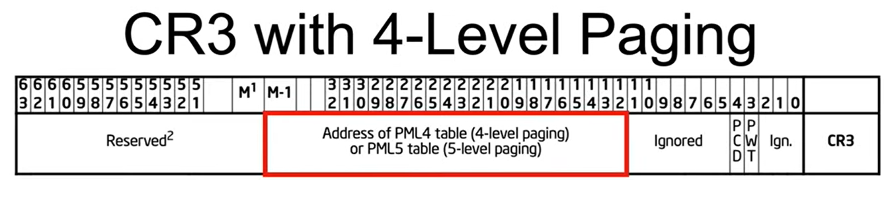

CR3 changes to point to different PLM4's of different processes.
When examining the current process context in windbg, DirBase points to the directory base address of the process (i.e PML5\4 \ PDPT..).
It has the same value of the CR3.